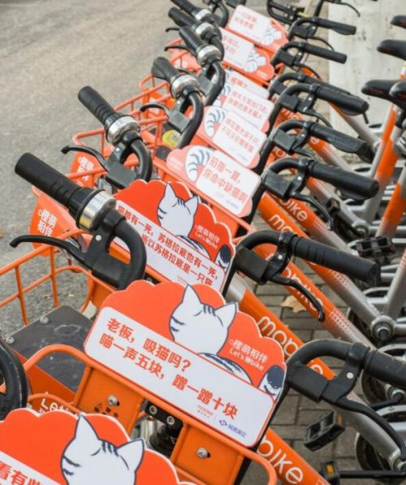
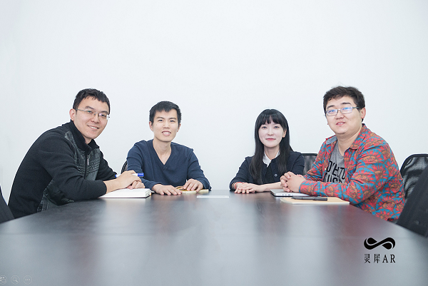
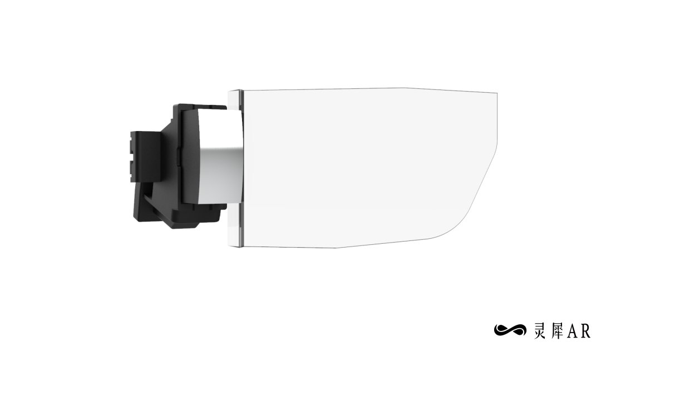
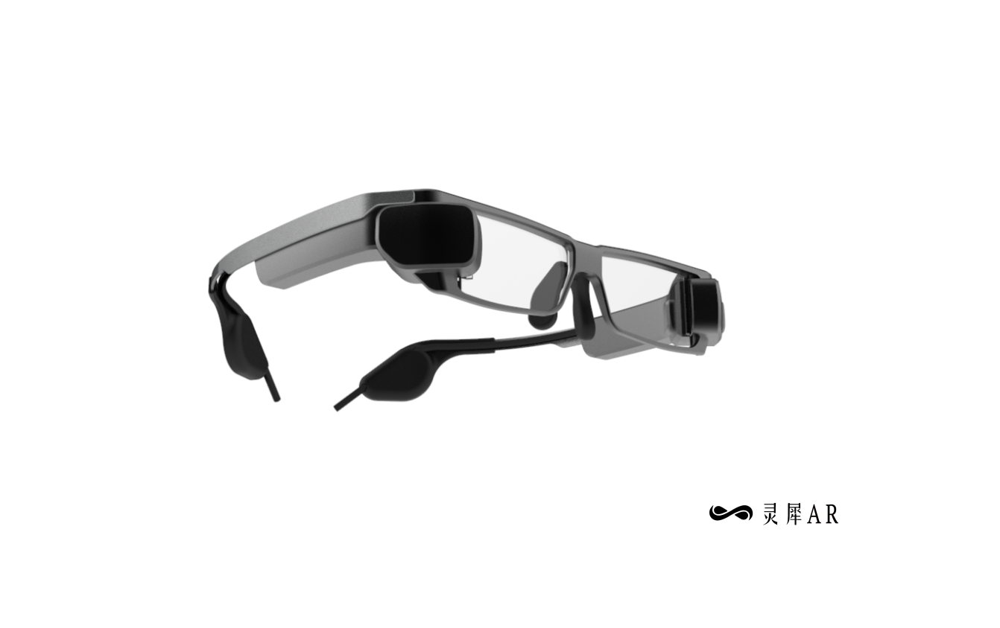

你好，未来！
知名科技研究所TexT实验室预言2020年到2025年将会引来Augmented reality（增强现实，简称AR）的快速发展阶段，此时也标志着未来科技的正式萌芽，TexT研究院把AR、AI、物联网、云端虚拟合称为未来四大引擎。
全息图是下一个用户界面
在苹果第四季度财报电话会议上，苹果首席执行官蒂姆·库克(Tim Cook)说，“AR将改变一切。”“他不是夸张。 增强现实(AR)正在形成一种全新的大规模技术使用范例。我们很快就从电脑键盘的输入，到鼠标的点击，到智 ...
MR一个新的改变即将到来
顾名思义，MR基本上是虚拟现实技术和增强现实技术的结合。将虚拟环境与我们目前所处的实际环境结合起来，在游戏、旅游、商业演示等领域创造身临其境的体验。在MR世界里，数字虚拟物体和显示环境能够实现实时互动。这是如此迷人。MR展示了我们和设备交互的巨大进步
AR说 | 零售市场 ：资源为王的时代
2017年11月3日，亚马逊联合苹果商城，上线了名为AR View的购物功能，IOS用户通过使用亚马逊APP就能率先体验到AR(增强现实)购物的乐趣。近年来，随着AR技术应用的不断完善和推广，AR技术在各领域的应用为人们带来了不一样的体验，在电商行业亦是如此。
摩拜联手网易洞见推AR单车：可随机召唤AR萌猫
摩拜近日推出解锁播放《圣诞歌》，让寒冷的冬季多了一丝温暖。而今天我们又得到消息继圣诞歌之后摩拜再次给我们带来了新的惊喜，而这个新鲜的东西叫“猫Bike”。用户只要拿出手机往车筐里扫一下，会出现一只小猫。

此次活动是由网易洞见和摩拜联手合作，只要摩拜单车的车筐内有指定图案，即可随机召唤一只姿态各异的AR萌猫，通过手机屏幕看到喵星人在你的摩拜车筐里撒娇卖萌。
另外，喵星人还打算在12月22-23日集体“占领”杭州——活动期间，在摩拜App的界面上也有换成猫咪的头像，就连月卡上也都是猫咪的头像，让你无时无刻不在“吸猫”。
所有定位在杭州的单车，都将变成猫咪的头像。就连摩拜月卡上，也都是喵星人的写真，让你尝尝被喵星人包围的快感，一次“吸”个够！
摩拜单车陆续在浙江省杭州市、嘉兴、京华、衢州等几个城市，投放了这样的实体AR单车近5000辆。
AR光学技术公司灵犀微光宣布获得红杉中国千万级A轮融资
2017年12月25日，AR光学显示技术提供商灵犀微光对外宣布获得并完成红杉资本中国基金数千万人民币的A轮融资。
灵犀微光成立于2014年底，与科技巨头布局AR全产业链的策略不同，灵犀聚焦于AR设备的瓶颈技术——光学显示技术，主攻AR产品中的核心器件光学引擎。

在创始人CEO郑昱看来，光学显示是AR产业链缺失的最重要的一块拼图。
光波导技术被认为是消费级AR设备将采用的显示技术。不同于棱镜、自由曲面等方案，光波导镜片能够做到比普通镜片更薄，并实现大视场角的清晰成像。作为国内第一家研发出光波导技术的公司，灵犀微光与Lumus、微软并肩，成为全球范围内为数不多的几家光波导技术拥有者。目前，灵犀已为合作伙伴提供稳定量产的AW60光学引擎和参考样机Mini-Glass。AW60在综合显示效果和体验方面达到世界领先水平，相比于Lumus的OE32，AW60具有明显的价格优势。基于灵犀的光波导镜片，AR设备厂商能够开发出如普通眼镜一般的AR眼镜。
【图-AW60】
【图-Mini-Glass】
红杉资本中国基金合伙人孙谦在谈到公司及AR领域时表示：AR硬件确实有其挑战之处，首先要有成熟的供应链，同时要求发展光学技术，若要在软硬件双方面同时做到最好，难度颇大。但在硬件产业链上，核心零部件具有非常重要的价值，在过去5-10年时间里，该领域诞生了许多千亿市值的企业，其中仍蕴藏着巨大的机会，而红杉中国此次投资灵犀微光，也正是看好其在AR核心光学显示技术上已经拥有的先发优势。
灵犀核心研发团队主要来自北大和清华顶尖光学实验室，并有平均产业经验20年以上的工艺团队。公司计划在A轮之后，将资金主要用于前沿技术研发、产品迭代优化，以及筹备自有生产线，同时，在专业人才引进和培养方面也会做更多投入。